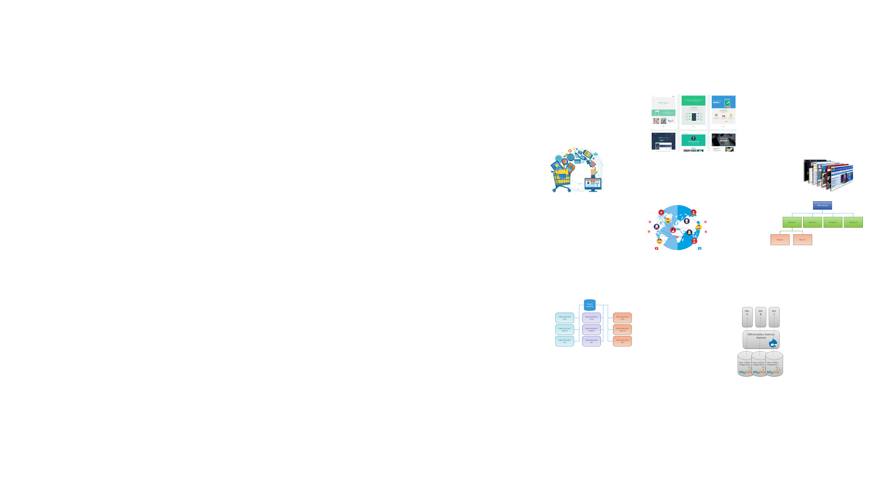
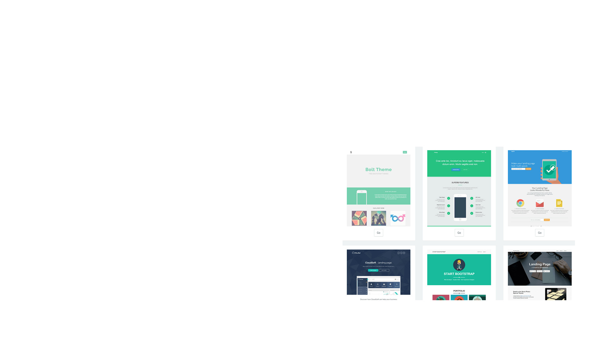
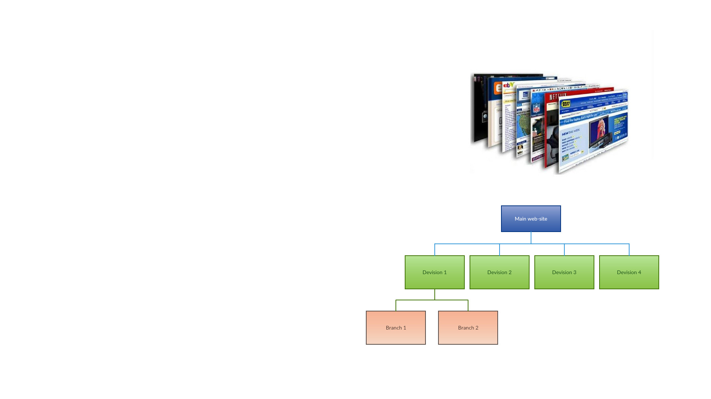
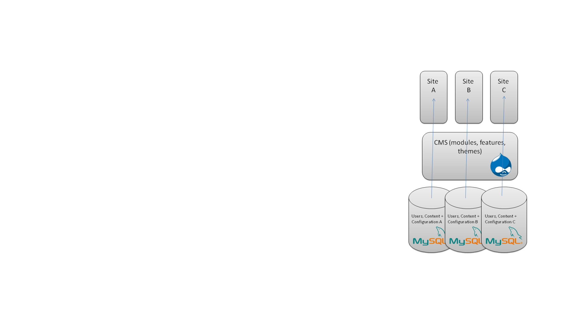
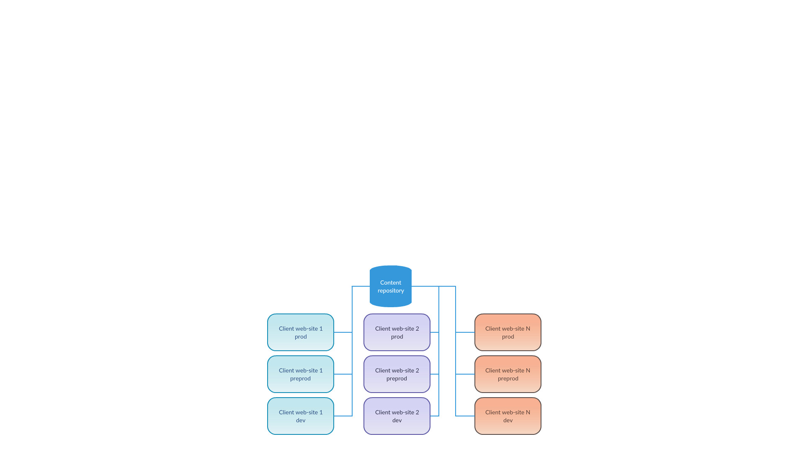
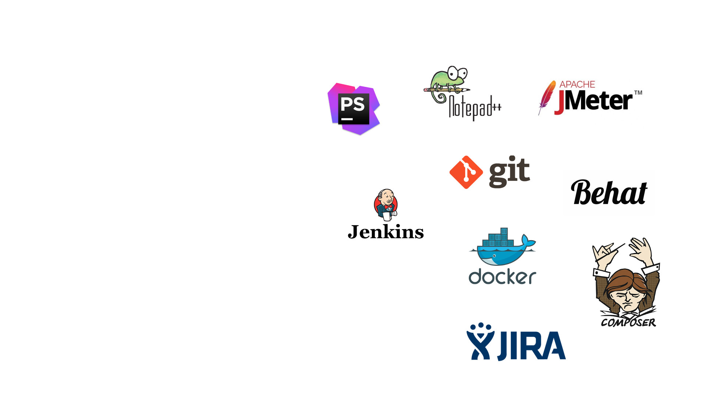
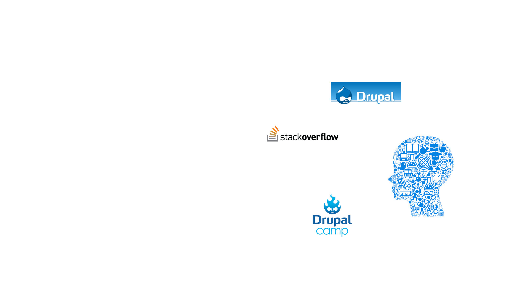

Difference in experience between Enterprise and non-Enterprise Drupal projects

Experience
- Freelance
- Small web-studio owner
- Tech/team lead at big companies
What does Enterprise project mean?
- complexity (technical and business requirements)
- integration with other systems
- high load
- legacy code support and migration from older systems
- specific data requirements
Different types of projects

- small web-site/landing page
- e-commerce web-site
- web portal
- social network
- site factory/multisiting
- content repository
Small web-site/landing page

- configuration
- theming
- small style updates
E-commerce web-site
- integration with payment systems
- import data from external sources
Web portal

- sharing data between sub-sites
- a lot of users
- high load - caching systems
Social network
- user-generated data
- live updates
- performance optimisation
- specific data (healthcare)
Site factory/multisiting

- common codebase
- quick creating a new website
Content repository

- custom API
- syncing data between content repo and client web-site
- complicate workflow
Tools

- IDE or text editor?
- Debuger?
- Git or manual updates?
- To test or not to test?
- CI/CD or manual updates?
- Static code analysis tools?
- Bug tracker or emails/google docs?
Knowledge sharing

- copy/past
- own solutions
- previous projects
- conference
- team members
Approach
- Technical docs
- Long term plans
- Communications
- Support
Info
- http://vgrygoryev.github.io/de-slides/ - these slides
- vgryg@softserveinc.com - my email